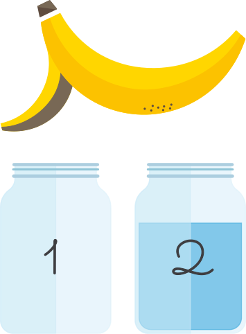
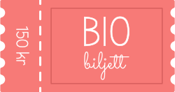
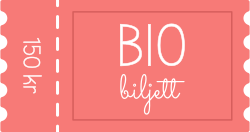

Hur påverkar fukt matavfallet?
Lägg ett bananskal i en burk eller påse med vatten och ett i en torr burk eller påse.
Kontrollera vad som hänt med bananskalet efter en vecka. Beskriv vad som händer med bananskalet när det förvaras torrt och vad som händer när bananskalet förvaras i en fuktig miljö. Fundera över vad som skulle hända om det inte fanns djur eller bakterier som bryter ner löv och växter i naturen. Rita och skriv en berättelse om hur det skulle se ut här på jorden då.



 
